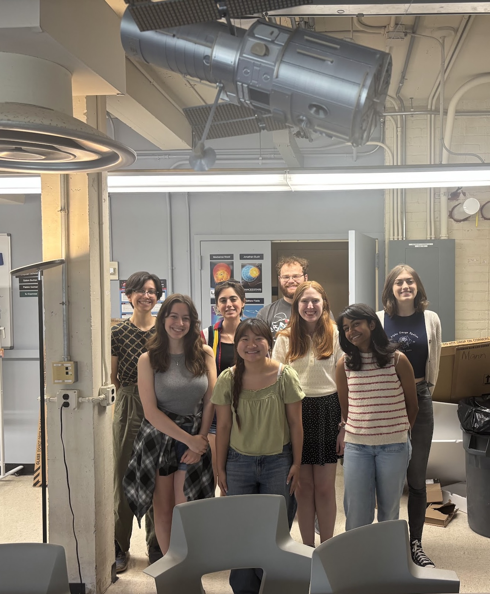


Madyson is a fifth-year graduate student, but started in the lab as an undergraduate and Chancellor Science Scholar. Madyson holds an NSF GRFP fellowship. She runs the TIDYE survey, which focuses on the demographics of young exoplanets from the TESS mission. She also works on age-dating associations based on stellar variability.
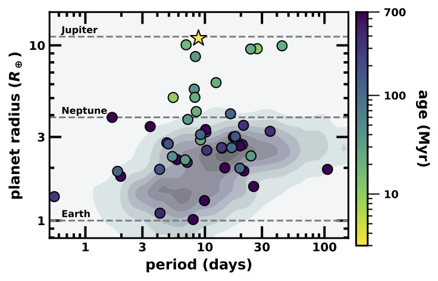

Andy is a fourth-year graduate student and NSF GRFP fellow. He studies the rotation of young and middle-aged stars. He is interested in how we assign ages to stars from their rotation, how we measure rotation from light curves (e.g., from TESS, Kepler, and K2), and what we can learn about stellar clusters/associations from the rotation of their member stars.
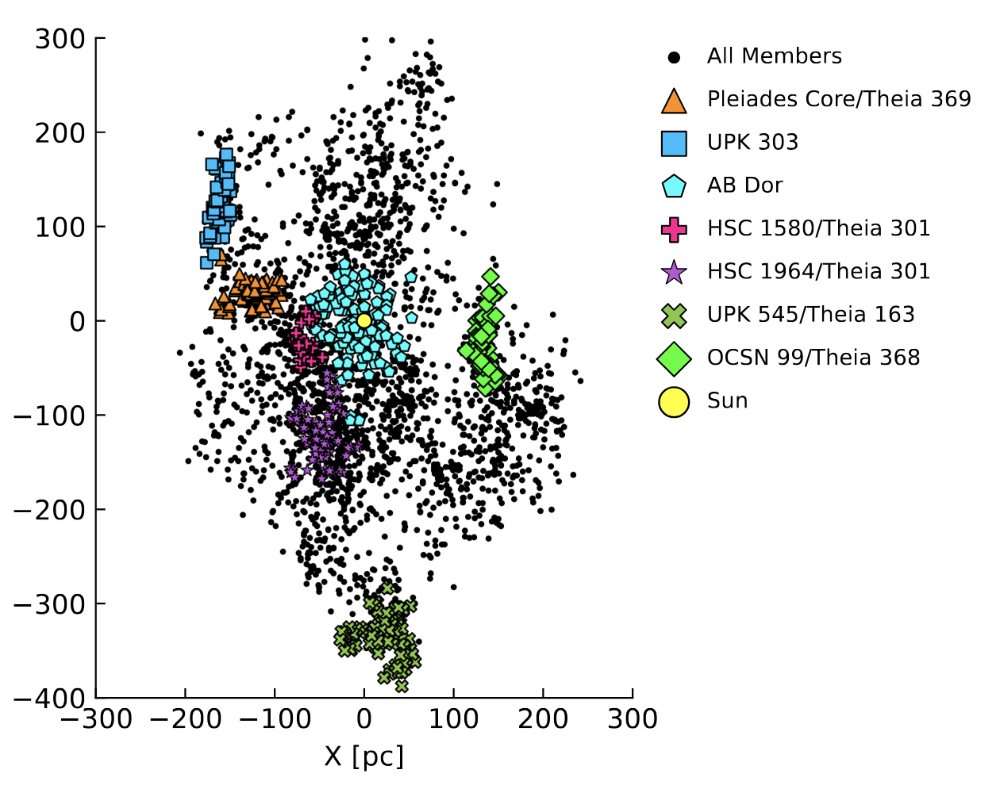
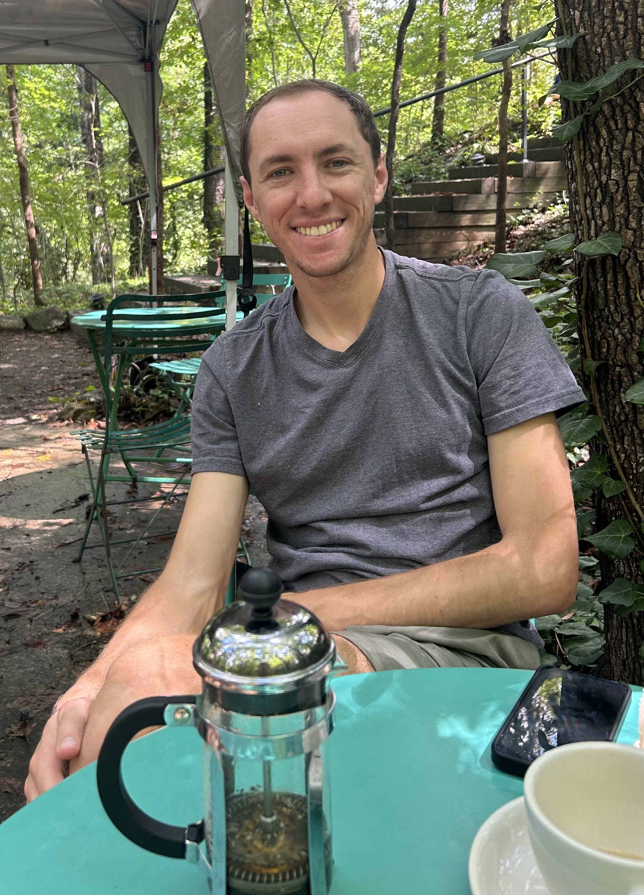
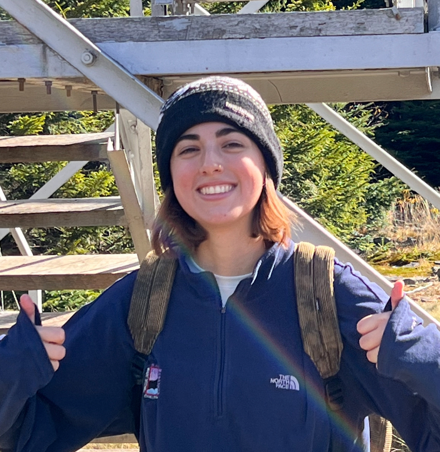
Sarah is a third-year graduate student. She works on deriving fundamental parameters (radius, mass, temperature) of the youngest stars (0–50 Myr) using Gaia and SPHEREx data. She also works on measuring the alignment between the rotation of <5 Myr stars and their protoplanetary disks. The bigger goal is to study if planets can form misaligned, and if so, how frequently.
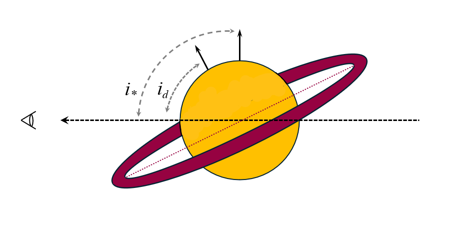
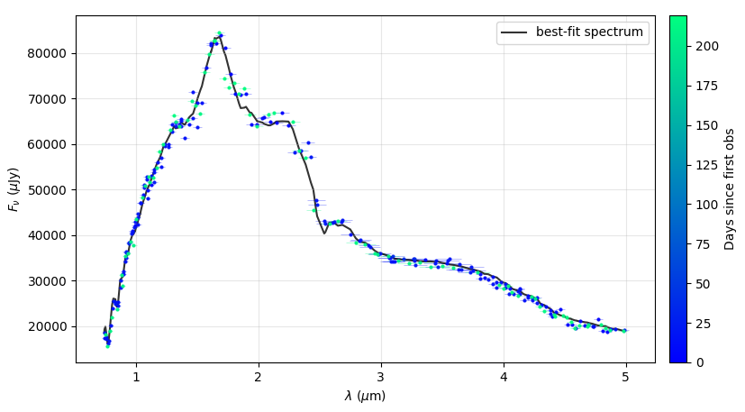
Isabel is a second-year graduate student (former undergrad on the team). She works on transit timing variations in young systems, a method that could help us measure the masses and eccentricities of young planets. She also works on the detection of planetary atmospheres from ground-based high-resolution spectra.
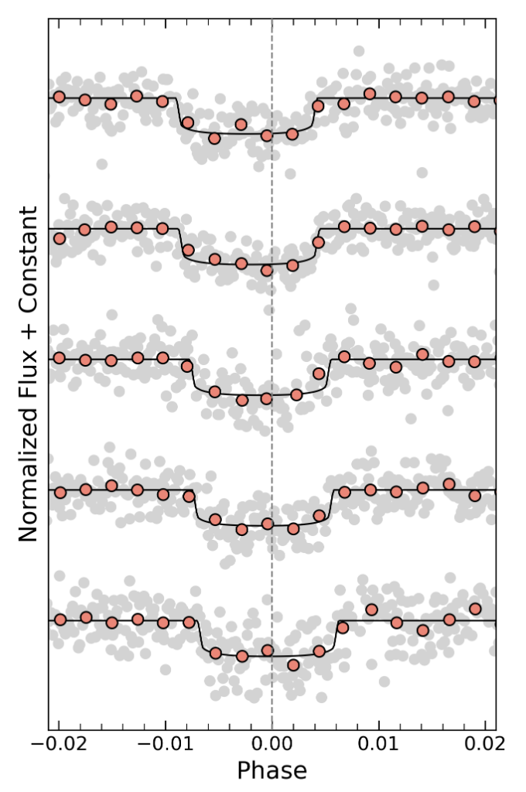
Mia is a first-year graduate student. We know stars follow a mass-luminosity relation calibrated using astrometric and eclipsing binaries. Mia's work focuses on measuring the activity levels of such calibrators to study the impact of activity, spots, and magnetic fields on the mass-luminosity relation. We refer to this as the activity-mass-luminosity relation.
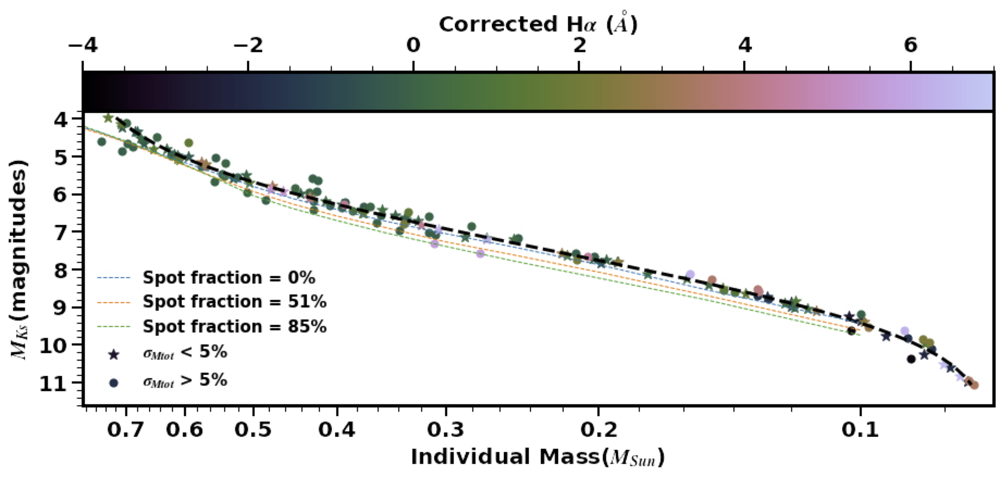
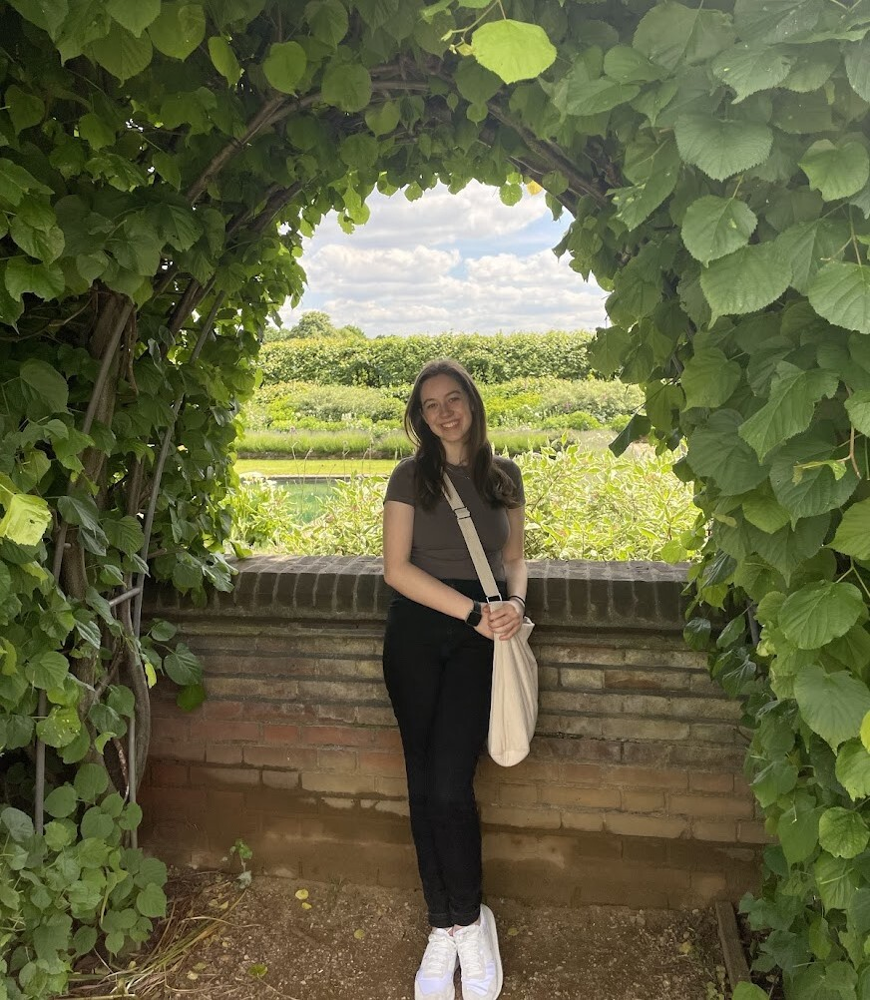
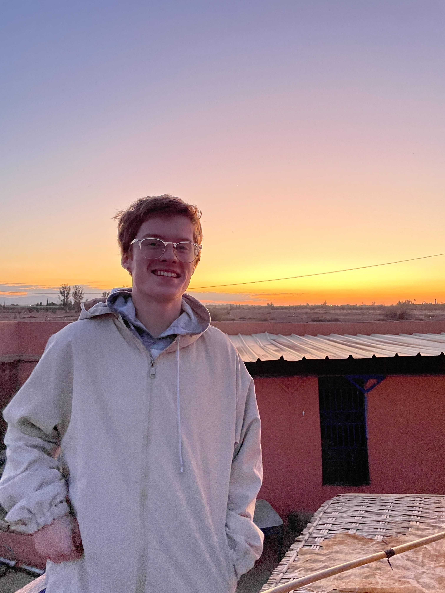
Ian is a senior undergraduate. He works on crowded-field photometry and light curve extraction from ground-based data. Specifically, he is working to measure the alignment between IRAS04125+2902A and its wide binary companion. For this, we need a rotation period, which is hard to measure given that the targets are so close (unresolved in TESS) and the companion is so much fainter. Part of this project is also to update the stellar radius and rotational broadening for the companion, which we use to estimate the stellar inclination.
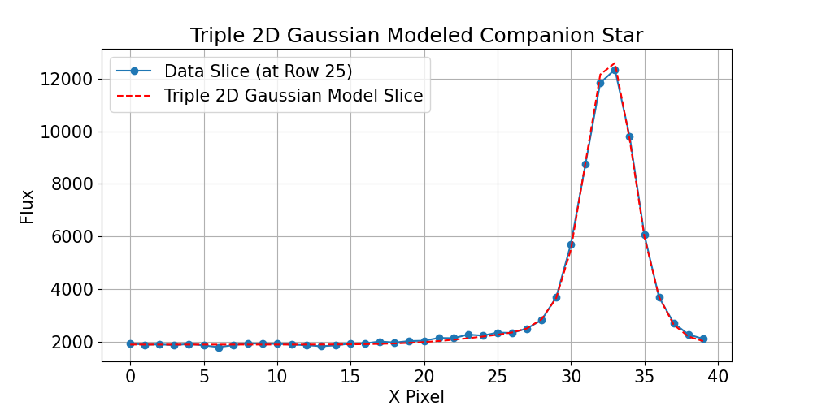
Avery is a senior undergraduate. She works on the search for planets around the most metal-poor stars (subdwarfs). This includes searching for large samples of low-metallicity K and M dwarfs using a suite of photometry and spectra (e.g., Gaia, SDSS, Pan-STARRS) and then cross-matching the list with the TESS, Kepler, and K2 catalogs, then performing a simple BLS search. The bigger goal is to understand what kind of planets (if any) can form in metal-poor environments.
Lindsey is a senior undergraduate. She works on developing methods to detect young planets in nearby clusters and star-forming regions. In particular, she is exploring which methods (Notch, Wotan, GP-match, etc) are most effective and for what kinds of stars (age, spectral type, etc). The bigger goal is to improve our completeness to young planets and to inform future surveys.
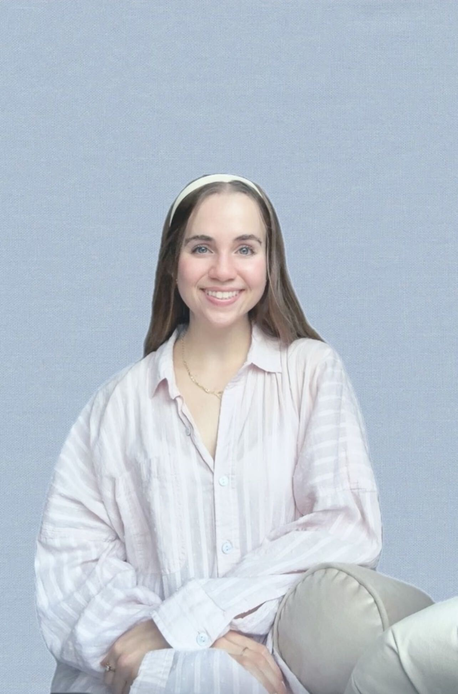
Hannah is a senior undergraduate. She works on transit timing variations in the young (17 Myr) planetary system HIP 67522bc to measure the masses and eccentricities of the two planets. This includes both dynamical modeling with TTVFast/jnkepler and precision transit-fitting in the presence of strong stellar variability.
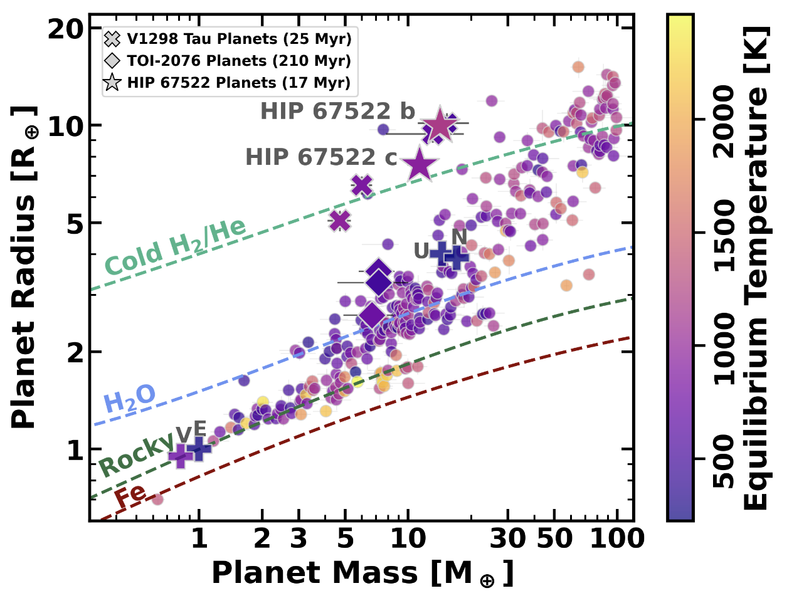
Radius vs mass of planetary systems, with young ones highlighted (V1298 Tau, HIP 67522, and TOI-2076). HIP 67522 and V1298 Tau sit in a low-density space, highlighting how young planets are puffy compared to their older counterparts.